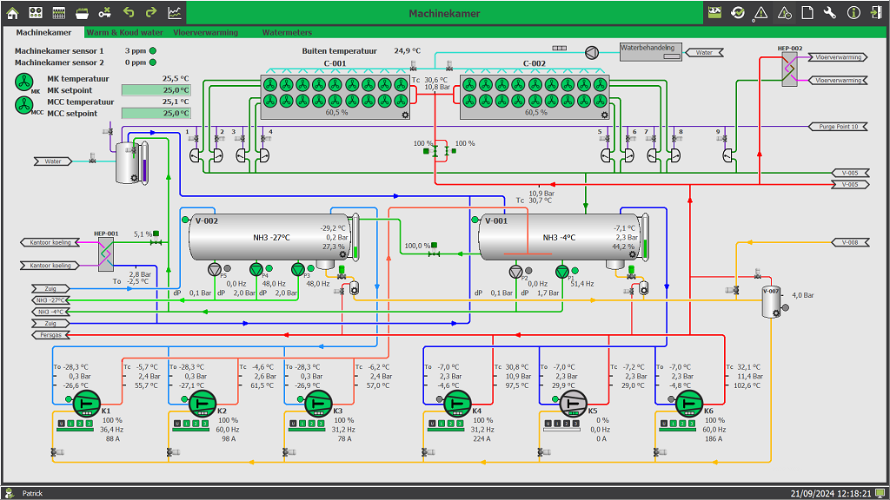

Начинаем с диагностики
Проверяем узлы и параметры системы, чтобы ремонт устранял причину неисправности.
Владивосток и Приморье
Ремонт рефрижераторов и холодильного оборудования. От автокондиционера до камеры для производства.
Диагностика. Согласование стоимости. Ремонт.
Техника — в работу.
Груз — в нужном режиме.

Холод — часть
вашего бизнеса.
Чем поможем
Обслуживаем транспорт и стационарное оборудование. Выберите направление — разберёмся в вашей задаче.

Не держит температуру, отключается или выдаёт ошибку? Найдём причину и согласуем ремонт.
Подробнее о ремонтеПодбор установки, переоборудование кузова, монтаж и запуск под нужный груз и маршрут.
Обсудить изготовление
Диагностика, поиск утечек, заправка, ремонт компрессоров и изготовление шлангов.
Ремонт кондиционера
Холодильный контур, электрика и автоматика. Диагностика и восстановление рабочего режима.
Ремонт контейнера
Проектирование и монтаж камер для хранения. Оборудование, автоматика и обслуживание.
Подобрать камеру
Камеры под продукт и производительность. Проектирование, монтаж и мобильная аренда.
Рассчитать решение
Температура онлайн 24/7, местоположение и траектория движения рефрижераторов — в одном интерфейсе.
Подключить контрольНаш подход
Холодильная система требует точной диагностики. Проверяем оборудование и объясняем, что именно нужно сделать.
Обсудить неисправностьПроверяем узлы и параметры системы, чтобы ремонт устранял причину неисправности.
Обсуждаем состав ремонта, стоимость и сроки. Вы понимаете, за что платите.
Контролируем работу оборудования и передаём рекомендации по эксплуатации.
Как работаем
Можно начать с короткого звонка или фото оборудования. Следующий шаг подскажет мастер.
Марка установки, симптомы, код ошибки или фото шильдика.
Уточним причину, объём работ и необходимые детали.
Обсудим стоимость и сроки, затем приступим к работе.
Запустим систему и проконтролируем рабочие параметры.
Предприятиям и автопаркам
Обслуживание холодильного оборудования по договору: плановое ТО, диагностика и ремонт камер и авторефрижераторов.
Состав работ, график и условия выезда согласуем под ваш объект или парк.
Обсудить обслуживаниеПеред обращением
Если вашей ситуации здесь нет, опишите её мастеру. Подскажем, с чего начать.
Марку и модель установки, тип транспорта или камеры, симптомы, код ошибки и фото шильдика. Для камеры дополнительно нужны размеры помещения, продукт и требуемый температурный режим.
Стоимость зависит от оборудования, срочности и объёма работ. После уточнения задачи инженер согласует состав диагностики и смету до ремонта.
Позвоните или напишите в мессенджер. Форма ниже только подготавливает текст для WhatsApp: отправьте его в открывшемся приложении. Приём техники, выезд и сроки мастер подтвердит отдельно.
Основной регион — Владивосток и Приморский край. Возможность выезда в другие города Дальнего Востока согласовывается по объекту и задаче.
Давайте разберёмся
Позвоните или опишите задачу. Уточним симптомы и согласуем дальнейшие действия.
+7 902 555 12 00Владивосток и Приморье.
Приём техники и выезд — по согласованию.